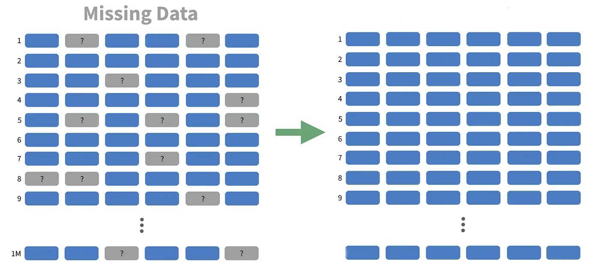
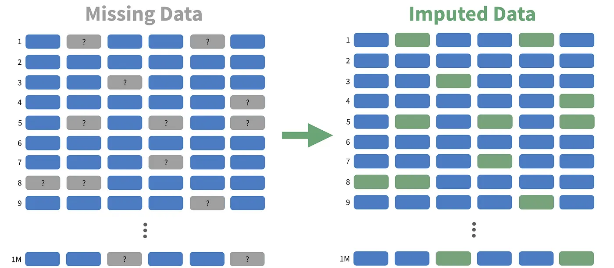

March 5, 2025
Gran parte de los métodos estadísticos están desarrollados para hacer inferencia y esta dependen de ciertos supuestos sobre los datos. Antes de realizar análisis, debemos validar los supuestos:
NULL, N/A, NaN).Los datos faltantes pueden distorsionar análisis y modelos. Existen distintos enfoques para manejarlos.
La falta de datos no está relacionada con ninguna variable del estudio.
✅ Ejemplos:
- Respuestas omitidas en una encuesta: En un cuestionario de satisfacción, algunos participantes no responden debido a un problema técnico en la plataforma de recolección de datos, afectando aleatoriamente a cualquier encuestado.
- Sensor defectuoso: Un sensor ambiental deja de registrar temperatura en momentos aleatorios debido a fallas esporádicas en la transmisión de datos, sin relación con las condiciones climáticas.
La falta de datos depende de otras variables observadas.
✅ Ejemplos:
- Datos de ingresos en una encuesta: En un estudio de mercado, las personas más jóvenes tienen más probabilidades de omitir su ingreso mensual en el cuestionario, pero dentro de cada grupo de edad, la falta de datos es aleatoria.
- Exámenes médicos faltantes: En un estudio de salud, los pacientes con menor edad pueden tener más registros faltantes de presión arterial porque los médicos tienden a medirla con menos frecuencia en personas jóvenes.
La ausencia de datos está relacionada con el valor en sí mismo.
✅ Ejemplos:
- Ingresos altos no reportados: En una encuesta sobre salarios, las personas con ingresos muy altos pueden optar por no revelar su sueldo, lo que genera un sesgo en la distribución de datos.
- Pacientes con enfermedades graves: En un estudio médico, los pacientes con enfermedades graves pueden no asistir a sus citas de seguimiento, lo que provoca datos faltantes que están relacionados con su estado de salud.
Existen diversas estrategias para tratar los datos faltantes, dependiendo de la cantidad y el patrón de ausencia.
Características:
- Útil si la cantidad de datos faltantes es pequeña.
- No recomendable si se pierde demasiada información.
Ejemplo: Si una encuesta tiene solo un 2% de valores faltantes en una columna específica, eliminarlos puede ser una solución viable. Sin embargo, si el 40% de los datos están ausentes, la eliminación puede comprometer la validez del análisis.

Cuando eliminar datos no es una opción, se pueden utilizar técnicas de imputación para completar los valores faltantes.

Media/Mediana
- Rellena los valores con la media o mediana del conjunto de datos.
- Útil para variables continuas con pocos valores faltantes.
Interpolación
- Usa valores adyacentes para estimar los datos faltantes.
- Aplicable en series temporales donde los valores cercanos tienen una relación lógica.
Modelos Predictivos
- Se pueden usar regresiones o algoritmos de machine learning (KNN, árboles de decisión) para estimar valores faltantes.
- Requiere un conjunto de datos suficientemente grande y con correlaciones fuertes entre variables.
Características:
- Genera varias imputaciones para reflejar la incertidumbre sobre los valores reales.
- Métodos como MICE (Multivariate Imputation by Chained Equations) son ampliamente usados en investigación.
Riesgos potenciales:
- La eliminación de datos puede sesgar los resultados si los datos faltantes no son aleatorios.
- La imputación inadecuada puede reducir la varianza artificialmente, afectando la precisión de los modelos.
- Siempre se deben reportar las estrategias usadas para manejar datos faltantes en estudios y análisis.
Los outliers son valores que se alejan significativamente de la distribución general de los datos y pueden influir negativamente en los análisis.
[Q1 - 1.5*IQR, Q3 + 1.5*IQR].3σ de la media.